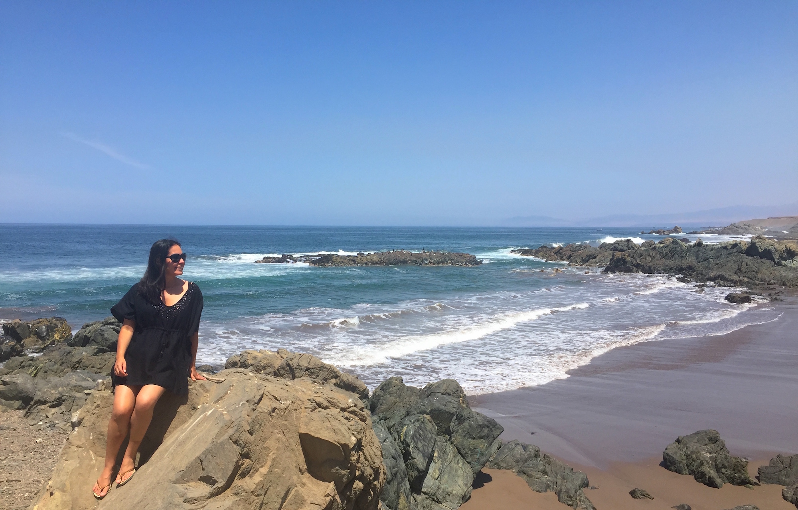
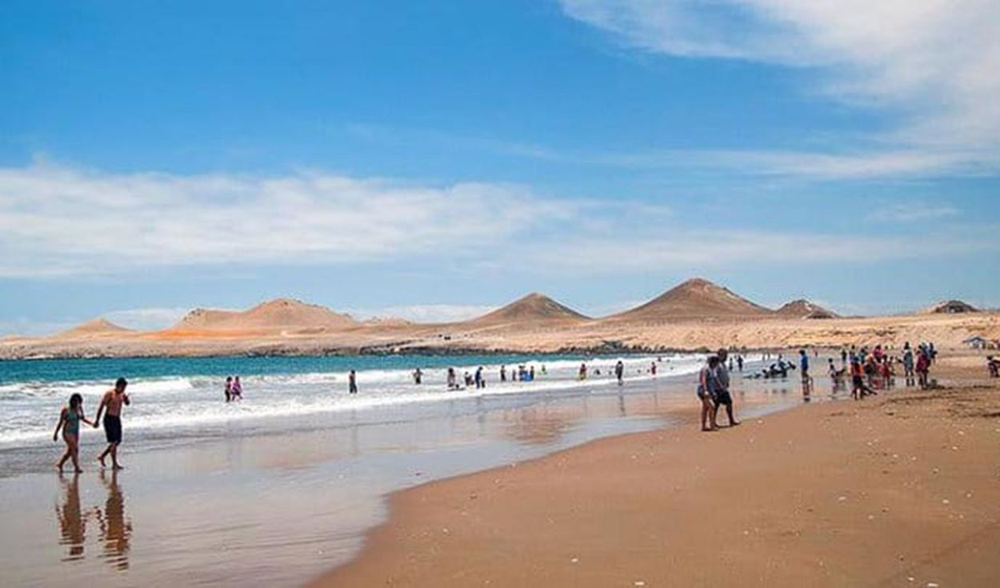

Playa pozo de Lizas
La playa de Ilo más popular es esta, se encuentra en la zona Sur de Punta Coles. Esta costa muestra al final costa que se desarrolla desde el departamento de Tacna. Por el mismo territorio se localizan las playas de Gentilares y playa Gaviotas. Más hacia el Sur se localizan un grupo de humedales que son un significativísimo refugio de una diversidad de fauna, sobre todo se puede ver una infinidad de aves migratorias.

Playa Jaboncillo
En el norte de Ilo las playas son diferentes a las del Sur, pero no menos preciosas. La geografía de este territorio es abrupta, y para llegar a estas riberas hay que transitar por un trecho de la vía ribereña que aun no está asfaltada. En esta zona podemos encontrar también la playa Piedras Negras, Si deseas viajar más al norte podrá llegar a Playa punta de Bombon, en Arequipa.
Playa Puerto Ingles
Es otro de los atractivos naturales de Ilo. Cuenta con una extensión de apenas 100 metros. Su mar sereno es perfecto para practicar pesca, natación, excursiones y buceo. La mejor parte es que se sitúa a dos kilómetros de la ciudad, por lo tanto, se puede llegar a pie.

Playa Enfermeras
Playa Enfermeras es una de las primeras costas después de la fundición de cobre de la ciudad de Ilo, lleva este nombre por ser la preferida de las mujeres que trabajaban en el centro de salud de la compañía Southern Peru. Es de fácil acceso pero algo pequeña. Como es un sitio solitario es recomendable llegar en automóvil y acompañado. No te puede faltar la silla y sombrilla, bebidas y tu bolsita para guardar la basura. Igualmente son ideales los zapatos para el agua. La playa tiene piedras en la orilla.
